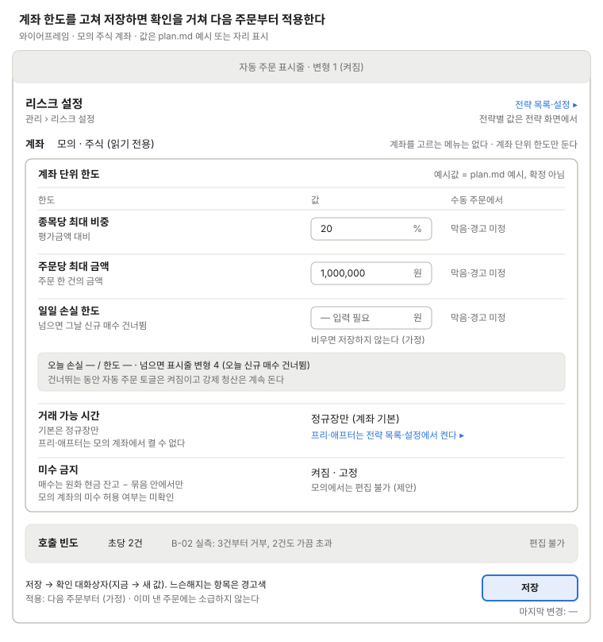

리스크 설정
계좌 단위 한도 값을 편집한다.

한도 값은 plan.md 예시값이고, 계좌는 고르지 않고 이름만 보이며(주식 모의 계좌), 프리·애프터마켓은 전략 목록·설정에서 켜고, 호출 빈도는 편집하지 않는 정보로만 둔다.
저장은 확인 대화상자(지금 → 새 값)를 거치고 느슨해지는 항목은 경고색으로 보이며, 다음 주문부터 적용한다(가정). 일일 손실 한도를 넘으면 그날 신규 매수만 건너뛰고(표시줄 변형 4) 토글은 켜진 채다. 전략별 값은 전략 화면에 둔다.
쓰는 공통 UI
화면 틀 · 자동 주문 표시줄 (변형 1, 4) · 확인 대화상자 (리스크 한도 저장)
상태
| 상태 | 보일 것 |
|---|---|
| 불러오는 중 | 값 칸에 자리 표시, 저장 비활성 |
| 불러오기 실패 | 오류 문구와 다시 시도, 저장 비활성 |
| 바뀐 값 없음 | 저장 비활성 |
| 입력 검증 오류 | 0·음수, 비중 100% 초과, 일일 손실 한도 빈 값은 칸 아래 오류 문구, 저장 막음 |
| 확인 대화상자 | 바뀐 항목의 지금 → 새 값, 느슨해지는 항목은 경고색 |
| 저장 중 | 저장 버튼 잠금 |
| 저장 실패 | 입력한 값은 남기고, 한도는 바뀌지 않았다고 알림 |
| 저장 완료 | 마지막 변경 시각 갱신, "다음 주문부터 적용 (가정)" |
| 일일 손실 한도 넘음 | 오늘 손실 자리에 "넘음 · 오늘 신규 매수 건너뜀", 표시줄 변형 4 |
화면 규칙
- 보여 줄 것: 종목당 최대 비중, 주문당 최대 금액, 일일 손실 한도, 거래 가능 시간, 미수 금지(제안)
- 데이터:
risk_limits - 주의: 모의 계좌는 프리·애프터마켓 자동 주문을 켤 수 없다. 호출 빈도(초당 2건)는 편집 대상이 아니다